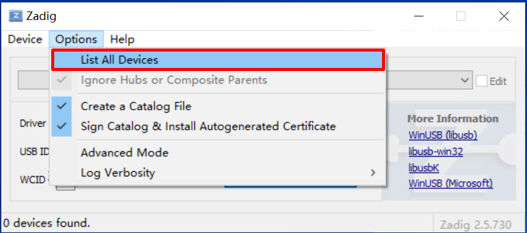
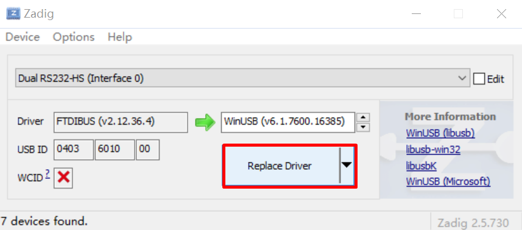

HPM SDK 概述¶
HPM SDK项目是基于HPMicro 公司的MCU编写的软件开发包，支持多种MCU。基于BSD许可证，包含了底层驱动，中间件和RTOS，例如littlevgl/ lwIP/ TinyUSB/ FreeRTOS等，支持大量评估板。
HPM SDK使用说明¶
依赖软件最低版本要求¶
软件名称 |
版本号 |
|---|---|
CMake |
3.13 |
Python |
3.8 |
安装依赖¶
Ubuntu:
安装工具:
sudo apt install build-essential cmake ninja-build libc6-i386 libc6-i386-cross libstdc++6-i386-cross
安装python3 (3.8.5 minimum) 与pip:
sudo apt install python3 python3-pip
Windows:
Windows命令行: 以下所使用的命令都以Windows命令行(cmd.exe)为例:
安装 Chocolatey (https://chocolatey.org/): 该工具为Windows下的包管理软件,通过该工具可以方便地在Windows平台上安装依赖软件:
根据Chocolatey官方步骤进行安装(https://chocolatey.org/install)
以管理员身份打开”cmd.exe”
禁用全局安装确认:
choco feature enable -n allowGlobalConfirmation
安装CMake:
choco install cmake --installargs 'ADD_CMAKE_TO_PATH=System'
安装其他工具:
choco install git python ninja
关闭该命令行窗口
准备工具链与环境变量配置¶
支持的工具链:
gnu-gcc <– 缺省工具链
nds-gcc
工具链:
gnu-gcc:
下载工具链压缩包,并解压.假定TOOLCHAIN_PATH作为工具链的解压目录(需要满足在TOOLCHAIN_PATH\bin下可以找到riscv32-unknown-elf-gcc)
申明系统环境变量”GNURISCV_TOOLCHAIN_PATH”指向工具链路径:
Linux, 以zsh为例(确保将TOOLCHAIN_PATH替换成你自己的路径):
export GNURISCV_TOOLCHAIN_PATH=TOOLCHAIN_PATH export HPM_SDK_TOOLCHAIN_VARIANT=
Windows命令行:
set GNURISCV_TOOLCHAIN_PATH=TOOLCHAIN_PATH set HPM_SDK_TOOLCHAIN_VARIANT=
nds-gcc:
下载工具链压缩包,并解压.假定TOOLCHAIN_PATH作为工具链的解压目录(需要满足在TOOLCHAIN_PATH\bin下可以找到riscv32-elf-gcc)
申明系统环境变量”GNURISCV_TOOLCHAIN_PATH”指向工具链路径:
Linux, 以zsh为例(确保将TOOLCHAIN_PATH替换成你自己的路径):
export GNURISCV_TOOLCHAIN_PATH=TOOLCHAIN_PATH export HPM_SDK_TOOLCHAIN_VARIANT=nds-gcc
Windows命令行:
set GNURISCV_TOOLCHAIN_PATH=TOOLCHAIN_PATH set HPM_SDK_TOOLCHAIN_VARIANT=nds-gcc
Note: Windows平台上Andes toolchain需要以下cygwin库文件: - cygwin1.dll - cygncursesw-10.dll 务必确保以上库文件所在目录被包含在系统环境变量PATH中
SDK编译所需环境变量设置:
通过运行提供的脚本执行:
Linux:
source env.shWindows 命令行:
env.cmd
手工设置环境变量”HPM_SDK_BASE”指向SDK根目录:
Linux, 以zsh为例(假定$HOME/hpm_sdk为SDK根目录):
export HPM_SDK_BASE=$HOME/hpm_sdk
Windows 命令行(假定c:\hpm_sdk为SDK根目录):
set HPM_SDK_BASE=c:\hpm_sdk
安装Python依赖包:
Linux:
pip3 install --user -r "$HPM_SDK_BASE/scripts/requirements.txt"
Window (Windows平台上Python 3.x 安装之后无法找到 python3/pip3, 只有python/pip):
pip install --user -r "%HPM_SDK_BASE%/scripts/requirements.txt"
使用GNU GCC工具链编译示例应用: 做完尚书步骤之后, 就可以构建编译SDK示例工程. 以下步骤描述了如何编译hello_world:
切换到示例应用目录:
cd samples/hello_world创建build目录:
Linux:
mkdir build
Windows:
md build
切换目录到”build”
cd build为Ninja-build产生构建文件:
cmake -GNinja -DBOARD=hpm6750evk ..Note: 如果提示”CMAKE_MAKE_PROGRAM is not set”, 可以通过在以上命令中追加”-DCMAKE_MAKE_PROGRAM=YOUR_MAKE_EXECUTABLE_PATH” (NINJA_PATH为ninja-build的目录,在其下可以找到ninja): # cmake -GNinja -DBOARD=hpm6750evk -DCMAKE_MAKE_PROGRAM=NINJA_PATH/ninja ..
编译:
ninja
当编译完成后,生成的elf以及对应的其他文件可以在output目录中找到.
运行/调试示例程序说明(hello_world):
完成评估板连线,包括调试器,串口线以及电源线
打开电源
打开串口软件,设置baudrate为115200
安装openocd(0.11以上)
切换至SDK根目录, 运行设置环境变量脚本:
Linux:
$ source env.shWindows command prompt:
env.cmd
或者手动设置名为OPENOCD_SCRIPTS的环境变量:
Linux:
$ export OPENOCD_SCRIPTS=${HPM_SDK_BASE}/boards/openocd
Windows:
set OPENOCD_SCRIPTS=%HPM_SDK_BASE%\boards\openocd
运行openocd, 需要按顺序指定配置文件: 调试器配置, 内核配置, 目标板配置。例如，通过ft2232在hpm6750evk上进行单核调试，可以运行如下命令:
openocd -f probes/ft2232.cfg -f soc/hpm6750-single-core.cfg -f boards/hpm6750evk.cfg
Note: 如果使用FTDI调试器并遇到提示
Error: libusb_open() failed with LIBUSB_ERROR_NOT_FOUND, 请检查FTDI usb驱动。如果驱动未正确安装，使用 zadig 更新驱动：打开zadig，点击 Options->List All Devices.

选择 Dual RS232-HS (Interface 0).

然后点击 Install Driver 或 Replace Driver.

切换到hello_world目录
cd samples/hello_world打开另一个终端,启动GDB client:
gnu-gcc:
TOOLCHAIN_PATH/bin/riscv32-unknown-elf-gdb
nds-gcc:
TOOLCHAIN_PATH/bin/riscv32-elf-gdb
连接GDB client到openocd GDB server (缺省状态下, openocd gdbserver 端口为 3333)
gdb> file build/output/hello_world.elf gdb> target remote localhost:3333 gdb> load gdb> b main gdb> c
顺利运行后可以在串口终端上打印”hello_world”.
使用Segger Embedded Studio for RISC-V编译应用
Segger Embedded Studio for RISC-V 可以从 https://www.segger.com/downloads/embedded-studio/ 下载
Segger Embedded Studio for RISC-V 工程文件会在 “使用GNU GCC工具链编译示例应用:” -> “4. 为Ninja-build产生构建文件:” 描述的过程中
产生的工程文件(.emProject)可以在build/segger_embedded_studio目录中找到
注意：openocd可执行文件应该可以通过当前终端的PATH环境变量中可以找到, 否则无法在工程文件中生成相应的调试配置，需要之后在Segger Embedded Studio中手工配置。